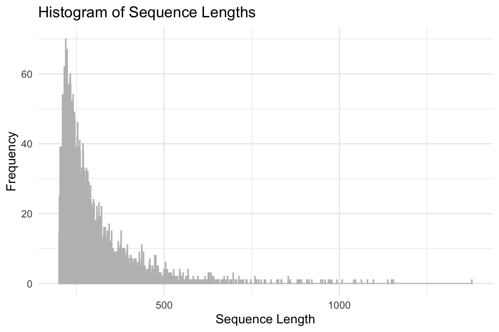
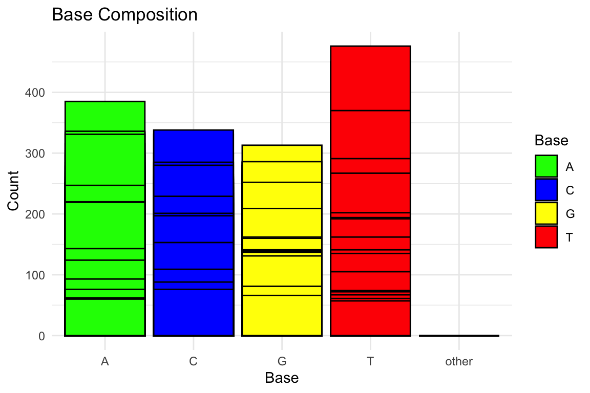
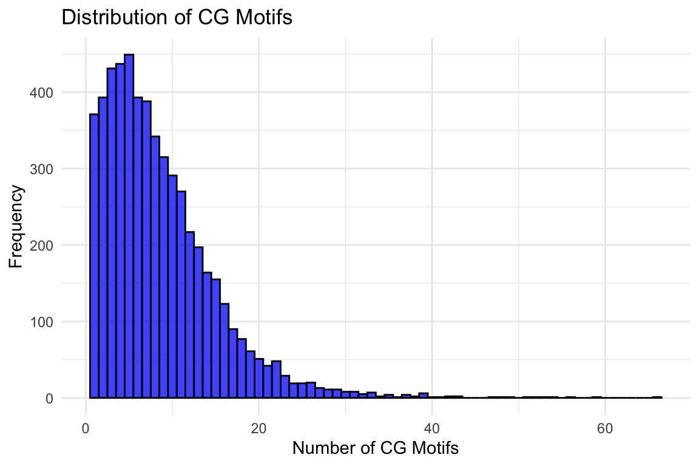

current date and time is September 26, 2023 21:17:53NCBI Blast
Taking a set of unknown sequence files and annotating them
For the first task you will take an unknown multi-fasta file and annotate it using blast. You are welcome to do this in terminal, Rstudio, or jupyter. My recommendation, and how I will demonstrate is using Rmarkdown. Once you have have your project structured, we will download software, databases, a fasta file and run the code.
This is product offers a workflow to take a few thousand unidentified sequences and provide a better understanding of what genes are present. This will be accomplished through using Blast and protein sequenes from UniProt/Swiss-prot.
TLDR (basics)
/home/shared/ncbi-blast-2.11.0+/bin/makeblastdb \
-in ../data/uniprot_sprot_r2023_01.fasta \
-dbtype prot \
-out ../blastdb/uniprot_sprot_r2023_01/home/shared/ncbi-blast-2.11.0+/bin/blastx \
-query ../data/Ab_4denovo_CLC6_a.fa \
-db ../blastdb/uniprot_sprot_r2023_01 \
-out ../output/Ab_4-uniprot_blastx.tab \
-evalue 1E-20 \
-num_threads 20 \
-max_target_seqs 1 \
-outfmt 6A few weeks ago I perfected software installation, so I will not demonstrate that here. Please see this notebook for more.
Database Creation
Obtain Fasta (UniProt/Swiss-Prot)
This is from here picur reviewe sequences I named based on the identify of the database given
cd ../data
curl -O https://ftp.uniprot.org/pub/databases/uniprot/current_release/knowledgebase/complete/uniprot_sprot.fasta.gz
mv uniprot_sprot.fasta.gz uniprot_sprot_r2023_04.fasta.gz
gunzip -k uniprot_sprot_r2023_04.fasta.gzMaking the database
mkdir ../blastdb
/home/shared/ncbi-blast-2.11.0+/bin/makeblastdb \
-in ../data/uniprot_sprot_r2023_01.fasta \
-dbtype prot \
-out ../blastdb/uniprot_sprot_r2023_01Getting the query fasta file
curl https://eagle.fish.washington.edu/cnidarian/Ab_4denovo_CLC6_a.fa \
-k \
> ../data/Ab_4denovo_CLC6_a.fa % Total % Received % Xferd Average Speed Time Time Time Current
Dload Upload Total Spent Left Speed
0 0 0 0 0 0 0 0 --:--:-- --:--:-- --:--:-- 0
63 1982k 63 1267k 0 0 1416k 0 0:00:01 --:--:-- 0:00:01 1422k
100 1982k 100 1982k 0 0 1800k 0 0:00:01 0:00:01 --:--:-- 1807kExploring what fasta file
head -3 ../data/Ab_4denovo_CLC6_a.fa>solid0078_20110412_FRAG_BC_WHITE_WHITE_F3_QV_SE_trimmed_contig_1
ACACCCCACCCCAACGCACCCTCACCCCCACCCCAACAATCCATGATTGAATACTTCATC
TATCCAAGACAAACTCCTCCTACAATCCATGATAGAATTCCTCCAAAAATAATTTCACACecho "How many sequences are there?"
grep -c ">" ../data/Ab_4denovo_CLC6_a.faHow many sequences are there?
5490# Read FASTA file
fasta_file <- "../data/Ab_4denovo_CLC6_a.fa" # Replace with the name of your FASTA file
sequences <- readDNAStringSet(fasta_file)
# Calculate sequence lengths
sequence_lengths <- width(sequences)
# Create a data frame
sequence_lengths_df <- data.frame(Length = sequence_lengths)
# Plot histogram using ggplot2
ggplot(sequence_lengths_df, aes(x = Length)) +
geom_histogram(binwidth = 1, color = "grey", fill = "blue", alpha = 0.75) +
labs(title = "Histogram of Sequence Lengths",
x = "Sequence Length",
y = "Frequency") +
theme_minimal()
# Read FASTA file
fasta_file <- "../data/Ab_4denovo_CLC6_a.fa"
sequences <- readDNAStringSet(fasta_file)
# Calculate base composition
base_composition <- alphabetFrequency(sequences, baseOnly = TRUE)
# Convert to data frame and reshape for ggplot2
base_composition_df <- as.data.frame(base_composition)
base_composition_df$ID <- rownames(base_composition_df)
base_composition_melted <- reshape2::melt(base_composition_df, id.vars = "ID", variable.name = "Base", value.name = "Count")
# Plot base composition bar chart using ggplot2
ggplot(base_composition_melted, aes(x = Base, y = Count, fill = Base)) +
geom_bar(stat = "identity", position = "dodge", color = "black") +
labs(title = "Base Composition",
x = "Base",
y = "Count") +
theme_minimal() +
scale_fill_manual(values = c("A" = "green", "C" = "blue", "G" = "yellow", "T" = "red"))
# Read FASTA file
fasta_file <- "../data/Ab_4denovo_CLC6_a.fa"
sequences <- readDNAStringSet(fasta_file)
# Count CG motifs in each sequence
count_cg_motifs <- function(sequence) {
cg_motif <- "CG"
return(length(gregexpr(cg_motif, sequence, fixed = TRUE)[[1]]))
}
cg_motifs_counts <- sapply(sequences, count_cg_motifs)
# Create a data frame
cg_motifs_counts_df <- data.frame(CG_Count = cg_motifs_counts)
# Plot CG motifs distribution using ggplot2
ggplot(cg_motifs_counts_df, aes(x = CG_Count)) +
geom_histogram(binwidth = 1, color = "black", fill = "blue", alpha = 0.75) +
labs(title = "Distribution of CG Motifs",
x = "Number of CG Motifs",
y = "Frequency") +
theme_minimal()
Running Blastx
~/applications/ncbi-blast-2.13.0+/bin/blastx \
-query ../data/Ab_4denovo_CLC6_a.fa \
-db ../blastdb/uniprot_sprot_r2023_01 \
-out ../output/Ab_4-uniprot_blastx.tab \
-evalue 1E-20 \
-num_threads 20 \
-max_target_seqs 1 \
-outfmt 6head -2 ../output/Ab_4-uniprot_blastx.tabecho "Number of lines in output"
wc -l ../output/Ab_4-uniprot_blastx.tabJoining Blast table with annoations.
Prepping Blast table for easy join
tr '|' '\t' < ../output/Ab_4-uniprot_blastx.tab \
> ../output/Ab_4-uniprot_blastx_sep.tab
head -1 ../output/Ab_4-uniprot_blastx_sep.tabCould do some cool stuff in R here reading in table
bltabl <- read.csv("../output/Ab_4-uniprot_blastx_sep.tab", sep = '\t', header = FALSE)
spgo <- read.csv("https://gannet.fish.washington.edu/seashell/snaps/uniprot_table_r2023_01.tab", sep = '\t', header = TRUE)datatable(head(bltabl), options = list(scrollX = TRUE, scrollY = "400px", scrollCollapse = TRUE, paging = FALSE))datatable(head(spgo), options = list(scrollX = TRUE, scrollY = "400px", scrollCollapse = TRUE, paging = FALSE))datatable(
left_join(bltabl, spgo, by = c("V3" = "Entry")) %>%
select(V1, V3, V13, Protein.names, Organism, Gene.Ontology..biological.process., Gene.Ontology.IDs) %>% mutate(V1 = str_replace_all(V1,
pattern = "solid0078_20110412_FRAG_BC_WHITE_WHITE_F3_QV_SE_trimmed", replacement = "Ab"))
)annot_tab <-
left_join(bltabl, spgo, by = c("V3" = "Entry")) %>%
select(V1, V3, V13, Protein.names, Organism, Gene.Ontology..biological.process., Gene.Ontology.IDs) %>% mutate(V1 = str_replace_all(V1,
pattern = "solid0078_20110412_FRAG_BC_WHITE_WHITE_F3_QV_SE_trimmed", replacement = "Ab"))# Read dataset
dataset <- read.csv("../output/blast_annot_go.tab", sep = '\t') # Replace with the path to your dataset
# Select the column of interest
column_name <- "Organism" # Replace with the name of the column of interest
column_data <- dataset[[column_name]]
# Count the occurrences of the strings in the column
string_counts <- table(column_data)
# Convert to a data frame, sort by count, and select the top 10
string_counts_df <- as.data.frame(string_counts)
colnames(string_counts_df) <- c("String", "Count")
string_counts_df <- string_counts_df[order(string_counts_df$Count, decreasing = TRUE), ]
top_10_strings <- head(string_counts_df, n = 10)
# Plot the top 10 most common strings using ggplot2
ggplot(top_10_strings, aes(x = reorder(String, -Count), y = Count, fill = String)) +
geom_bar(stat = "identity", position = "dodge", color = "black") +
labs(title = "Top 10 Species hits",
x = column_name,
y = "Count") +
theme_minimal() +
theme(legend.position = "none") +
coord_flip()data <- read.csv("../output/blast_annot_go.tab", sep = '\t')
# Rename the `Gene.Ontology..biological.process.` column to `Biological_Process`
colnames(data)[colnames(data) == "Gene.Ontology..biological.process."] <- "Biological_Process"
# Separate the `Biological_Process` column into individual biological processes
data_separated <- unlist(strsplit(data$Biological_Process, split = ";"))
# Trim whitespace from the biological processes
data_separated <- gsub("^\\s+|\\s+$", "", data_separated)
# Count the occurrences of each biological process
process_counts <- table(data_separated)
process_counts <- data.frame(Biological_Process = names(process_counts), Count = as.integer(process_counts))
process_counts <- process_counts[order(-process_counts$Count), ]
# Select the 20 most predominant biological processes
top_20_processes <- process_counts[1:20, ]
# Create a color palette for the bars
bar_colors <- rainbow(nrow(top_20_processes))
# Create a staggered vertical bar plot with different colors for each bar
barplot(top_20_processes$Count, names.arg = rep("", nrow(top_20_processes)), col = bar_colors,
ylim = c(0, max(top_20_processes$Count) * 1.25),
main = "Occurrences of the 20 Most Predominant Biological Processes", xlab = "Biological Process", ylab = "Count")
# Create a separate plot for the legend
png("../output/GOlegend.png", width = 800, height = 600)
par(mar = c(0, 0, 0, 0))
plot.new()
legend("center", legend = top_20_processes$Biological_Process, fill = bar_colors, cex = 1, title = "Biological Processes")
dev.off()knitr::include_graphics("../output/GOlegend.png")